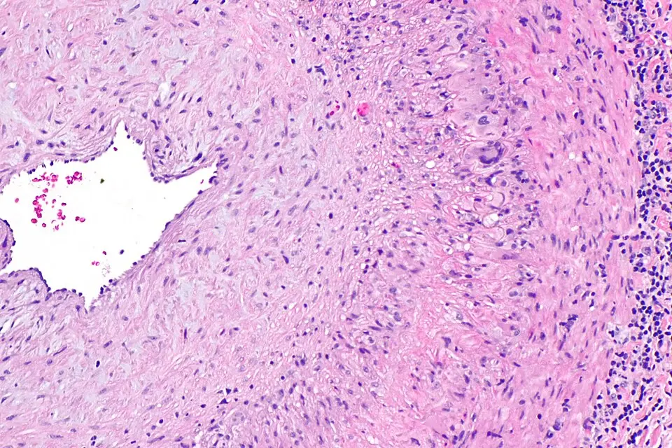

DX.10 — Artérite à cellules géantes avec atteinte visuelle
L’artérite à cellules géantes peut rendre aveugle en quelques heures ou en quelques jours, puis elle menace l’autre œil S1S10. Le médecin la soupçonne chez toute personne de plus de 50 ans qui présente une nouvelle céphalée, une claudication de la mâchoire ou un trouble visuel S2. Il commence alors les glucocorticoïdes le jour même, puis il confirme la vascularite par l’échographie ou la biopsie S7S10.
1. Définition
Le protocole lausannois du Centre hospitalier universitaire vaudois (CHUV) définit l’artérite de Horton comme une vasculite subaiguë à chronique des grandes et moyennes artères S1. Elle atteint de préférence la crosse aortique et ses branches destinées au crâne, ce qui explique les signes céphaliques et oculaires S1. La revue du CHUV publiée en 2025 dans la Revue Médicale Suisse emploie le terme d’artérite à cellules géantes (ACG) et précise qu’elle survient après 50 ans S3. Pour l’EULAR (Alliance européenne des associations de rhumatologie), elle fait partie des vasculites primitives des gros vaisseaux dans ses recommandations de 2025 S7. L’atteinte visuelle désigne ici l’ischémie du nerf optique ou de la rétine que provoque l’occlusion des branches de l’artère ophtalmique S1S10.
2. Épidémiologie (Suisse, puis Europe)
Le registre national suisse SCQM a inclus 337 patients atteints d’ACG entre 2020 et 2024 ; leur âge médian atteignait 72 ans et 64 % étaient des femmes S4. En Europe, la prévalence est estimée à une personne sur 500 après 50 ans, avec un pic d’incidence entre 70 et 80 ans S1. Les symptômes visuels touchaient 31 % des patients suisses au diagnostic, ce qui fait de l’œil la complication grave la plus fréquente S4. Les chiffres suisses et européens et l’histoire naturelle sans traitement justifient le rang 🚩 E2 de cette leçon.
Chiffres suisses et européens
| Donnée | Valeur | Population et période | Source |
|---|---|---|---|
| Âge médian au diagnostic | 72 ans (écart interquartile 65–77) | Registre SCQM, Suisse, 2020–2024, 337 ACG | S4 |
| Proportion de femmes | 64 % | Registre SCQM, Suisse | S4 |
| Symptômes crâniens, visuels, polymyalgiques au diagnostic | 81 %, 31 %, 43 % | Registre SCQM, Suisse | S4 |
| Prévalence | 1 sur 500 | Europe et Amérique du Nord, plus de 50 ans | S1 |
| Incidence annuelle | 20 à 30 cas pour 100 000 | Europe et Amérique du Nord, plus de 50 ans | S1 |
| Pic d’incidence | 70 à 80 ans | Europe | S1 |
| Comorbidités au diagnostic | Hypertension 51 %, ostéoporose 26 %, diabète 15 % | Registre SCQM, Suisse | S4 |
Le tableau montre une maladie de la personne âgée, déjà chargée en comorbidités que la corticothérapie aggrave S4. Une ACG avant 50 ans reste très rare, ce qui oriente vers une autre vasculite chez le sujet jeune S1S2.
Histoire naturelle et enjeux suisses
La perte visuelle définitive est précédée de troubles visuels transitoires dans 15 à 25 % des cas, qui offrent donc une fenêtre d’action S1. Sans traitement, l’autre œil peut être atteint dans les une à deux semaines qui suivent S1. Le déficit visuel installé reste permanent, si bien que le traitement protège surtout l’œil encore sain S1S10.
Dans le registre suisse, 37 % des patients prenaient encore des glucocorticoïdes à 24 mois, malgré le tocilizumab prescrit à près de trois quarts d’entre eux S4. Une enquête nationale de 2023 montre que l’imagerie et la biopsie temporale sont rapidement accessibles en Suisse, mais que les schémas de décroissance varient d’un centre à l’autre S5. Les spécialistes suisses interrogés suivaient en médiane 7,5 patients atteints d’ACG par an, ce qui situe la maladie parmi les vascularites les plus vues S5.
3. Physiopathologie
La perte visuelle de l’ACG ne se comprend qu’avec la vascularisation du nerf optique et de la rétine, que le médecin doit connaître avant d’examiner le fond d’œil S10. Selon le modèle cité par le CHUV, un antigène gagne l’adventice par les vasa vasorum, où des lymphocytes T le reconnaissent et sécrètent de l’interféron gamma S1. Les macrophages activés forment ensuite des cellules géantes et libèrent l’interleukine 1, l’IL-6, des métalloprotéinases et du monoxyde d’azote S1. La lame élastique interne se rompt et l’intima prolifère jusqu’à rétrécir ou occlure la lumière, sans thrombose, contrairement à d’autres vasculites S1. L’atteinte reste segmentaire, ce qui explique les biopsies faussement négatives et l’intérêt d’examiner toute la longueur de l’artère S1S2. La cascade en quatre temps relie chaque lésion à l’examen qui la montre et au traitement qui la corrige.
Base à connaître : vascularisation du nerf optique et de la rétine
L’artère ophtalmique naît de la carotide interne et fournit à la fois l’artère centrale de la rétine et les artères ciliaires postérieures S10. L’artère centrale de la rétine nourrit les couches internes, c’est-à-dire les cellules ganglionnaires et les fibres optiques S10. Les artères ciliaires postérieures irriguent la choroïde, donc les photorécepteurs, et constituent la principale source de sang de la tête du nerf optique S10.
Une vascularite des artères ciliaires postérieures produit donc une neuropathie optique ischémique antérieure, avec un disque optique gonflé et pâle S1S10. L’occlusion de l’artère centrale de la rétine blanchit au contraire la rétine interne et laisse une tache rouge cerise maculaire S1. Un fond d’œil normal avec un déficit pupillaire afférent oriente vers une ischémie postérieure du nerf, située en arrière du globe S1.
L’association d’une neuropathie ischémique et d’un défaut de remplissage choroïdien est très évocatrice d’ACG, parce que les deux territoires dépendent des mêmes artères ciliaires S10. Le débutant qui regarde seulement la papille manque ce raisonnement et classe à tort la neuropathie comme non artéritique.
Cascade en quatre temps
- L’amorce se fait dans l’adventice, où les lymphocytes T reconnaissent un antigène encore inconnu et sécrètent de l’interféron gamma S1.
- Le développement mobilise les macrophages, qui fusionnent en cellules géantes et libèrent l’IL-6, laquelle élève la protéine C réactive (CRP) S1S2.
- L’installation détruit la lame élastique et épaissit l’intima ; la paroi œdémateuse apparaît alors comme un halo sombre à l’échographie S1S2.
- Le maintien de l’inflammation explique les rechutes pendant la décroissance et justifie les épargnants cortisoniques ciblant l’IL-6 ou la voie JAK S7.
Les glucocorticoïdes éteignent vite l’infiltrat lymphocytaire, alors que l’hyperplasie intimale et la rupture de la lame élastique persistent beaucoup plus longtemps S1. La biopsie conserve donc souvent sa valeur après quelques jours de traitement, ce qui autorise le traitement immédiat S1S10.
Corrélation : perturbation, exploration, traitement
| Perturbation | Exploration qui la montre | Traitement qui la corrige |
|---|---|---|
| L’IL-6 circulante élève la CRP et la vitesse de sédimentation. | CRP, vitesse de sédimentation, numération S1 | Les glucocorticoïdes, puis le tocilizumab, bloquent cette voie S2S13. |
| L’œdème inflammatoire épaissit la paroi. | Signe du halo à l’échographie temporale et axillaire S2S8 | Les glucocorticoïdes réduisent l’œdème en quelques jours S2. |
| Les cellules géantes et l’infiltrat envahissent la média. | Biopsie de l’artère temporale S1S10 | Les glucocorticoïdes font disparaître l’infiltrat S1. |
| L’hyperplasie intimale occlut les artères ciliaires. | Acuité, pupilles, champ visuel et fond d’œil S10 | Le traitement prévient l’extension mais ne ressuscite pas le nerf infarci S1. |
| L’aortite et l’atteinte axillaire touchent les gros troncs. | TEP-TDM, IRM ou angioscanner S1S8 | La même stratégie s’applique, avec une surveillance structurelle S8. |
4. Démarche diagnostique
Dans la leçon « Perte de vision aiguë ou progressive », l’ACG est au rang 🚩 E2, juste après l’occlusion artérielle rétinienne (E1). Le médecin pose donc deux questions dès le premier contact : la perte visuelle est-elle ischémique, et une artérite peut-elle l’expliquer après 50 ans S1S10 ? La neuropathie non artéritique est beaucoup plus fréquente, mais l’ACG passe en premier parce qu’elle impose une corticothérapie urgente S10. Les diagnostics à départager se trient par le contexte, le fond d’œil et l’inflammation, sans que ce tri retarde le traitement.
Diagnostics à départager
| Diagnostic | Élément qui tranche | Piège | Conduite si positif |
|---|---|---|---|
| 🚩 Occlusion embolique de l’artère centrale de la rétine | Tache rouge cerise, emboles visibles, terrain athéromateux S1 | L’ACG peut aussi occlure cette artère ; le COUF la recherche systématiquement après 50 ans S10. | On demande la CRP en urgence et l’on suit la leçon DX.9. |
| Neuropathie optique ischémique antérieure non artéritique | Terrain vasculaire, papille congestive, CRP normale S10 | Une neuropathie pâle avec amaurose fugace préalable oriente au contraire vers l’ACG S10. | On contrôle les facteurs de risque après avoir écarté l’ACG. |
| Névrite optique | Âge jeune, douleur aux mouvements oculaires, IRM orbitaire | L’ACG reste très rare avant 50 ans S1. | On suit la leçon DX.8. |
| Accident ischémique transitoire athérothrombotique | Déficit neurologique focal, sténose carotidienne S1 | L’ACG atteint surtout le territoire vertébrobasilaire S1. | On organise la filière neurovasculaire. |
| Pseudopolyarthrite rhizomélique isolée | Douleurs des ceintures sans signe crânien ni visuel S1S11 | Elle peut cacher une ACG, car les deux maladies forment un spectre S11. | On recherche les signes crâniens à chaque visite. |
5. Anamnèse ciblée et drapeaux rouges
L’anamnèse cherche d’abord ce qui menace la vision, car une perte transitoire précède souvent la cécité définitive S1. Le médecin caractérise ensuite chaque symptôme : la céphalée, la claudication de la mâchoire ou de la langue, le trouble visuel transitoire ou permanent et la diplopie. Il recherche aussi les douleurs des ceintures, les signes généraux et la claudication d’un membre, qui signent une atteinte des gros troncs. Enfin, il relève les traitements qui modifient la décision : glucocorticoïdes déjà pris, anticoagulants, antidiabétiques et immunosuppresseurs S1S12. Les drapeaux rouges imposent chacun une action immédiate.
Céphalée
La céphalée est le symptôme le plus fréquent ; elle siège surtout dans la région temporale ou occipitale S1. Elle est typique lorsqu’elle est nouvelle, inhabituelle et s’accompagne d’une hyperesthésie du cuir chevelu, comme une douleur au passage de la brosse S1S10. Elle reste atypique quand elle dure depuis des années sans changement, car l’ACG produit une céphalée d’apparition récente S2S9. Son absence n’écarte pas l’artérite, puisque la plainte visuelle peut dominer seule le tableau S2.
Claudication de la mâchoire ou de la langue
La claudication de la mâchoire est probablement le symptôme le plus spécifique de l’ACG S1. Elle consiste en une fatigue ou une douleur des muscles masticateurs qui apparaît après quelques bouchées et cède au repos S1. Ce rythme d’effort la distingue d’une douleur dentaire ou articulaire, qui persiste au repos ou au premier mouvement. La claudication de la langue ou de la déglutition est plus rare, mais elle a la même valeur ischémique S1S12.
Trouble visuel transitoire ou permanent
La baisse visuelle touche un œil ou les deux, avec ou sans douleur, et elle est souvent précédée d’une baisse de la vision des couleurs S1. L’amaurose fugace typique dure quelques minutes ; chez une personne âgée, elle doit faire évoquer une ACG même si l’examen redevient normal S1S2. La baisse définitive est brutale, indolore et souvent découverte au réveil, comme dans toute neuropathie ischémique antérieure S10. La plainte devient atypique si l’œil est rouge et douloureux, ce qui oriente vers une cause du segment antérieur.
Diplopie
La diplopie binoculaire traduit une ischémie d’un nerf oculomoteur et fait partie des manifestations neurologiques rares de l’ACG S1. Toute manifestation neuro-ophtalmologique transitoire au-delà de 60 ans peut être un signe précoce de la maladie S1. Une diplopie qui disparaît à l’occlusion d’un œil confirme son caractère binoculaire et justifie donc la même urgence qu’une perte visuelle.
Douleurs des ceintures
La pseudopolyarthrite rhizomélique se manifeste par une raideur matinale des épaules, de la nuque et du bassin S1. Elle touche une personne sur 133 après 50 ans et partage le même pic d’âge que l’ACG S1. Le praticien zurichois la décrit avec l’ACG comme les deux expressions d’un même spectre de maladie S11. Un diagnostic actuel ou antérieur de pseudopolyarthrite augmente donc nettement la probabilité d’ACG lorsqu’un signe crânien ou visuel apparaît S2.
Signes généraux
Fatigue, fièvre et amaigrissement concernent environ la moitié des patients S1. Une fièvre inexpliquée, une anémie ou une inflammation biologique isolée chez une personne âgée doivent faire évoquer une ACG S2. Ces signes ne sont pas spécifiques, mais ils renforcent la probabilité lorsqu’ils accompagnent une céphalée ou un trouble visuel.
Claudication d’un membre
La claudication touche surtout les membres supérieurs, parce que la vascularite rétrécit les artères sous-clavières ou axillaires S1. Elle est très rare aux membres inférieurs, où elle traduit une atteinte iliaque S1. Ce symptôme signe une forme des gros vaisseaux, qui demande une imagerie de l’aorte et de ses branches S1S8.
Drapeaux rouges
| Drapeau rouge | Signification | Action immédiate |
|---|---|---|
| Amaurose fugace après 50 ans | Ischémie oculaire réversible, prélude possible à la cécité S1 | On débute les glucocorticoïdes et l’on adresse le patient dans les 24 heures S7. |
| Baisse visuelle constituée | Neuropathie ischémique ou occlusion artérielle S10 | On traite le jour même et l’on protège l’autre œil S1. |
| Diplopie nouvelle | Ischémie d’un nerf oculomoteur S1 | On applique la même conduite urgente. |
| Déficit neurologique focal | Ischémie vertébrobasilaire possible S1 | On active la filière de l’accident vasculaire cérébral. |
| Douleur thoracique ou dorsale nouvelle | Aortite, anévrisme ou dissection S1 | On demande une imagerie aortique urgente. |
| Nouveau trouble visuel pendant la décroissance | Rechute ischémique S1S7 | On réaugmente les glucocorticoïdes et l’on revoit le patient le jour même. |
6. Examen physique ciblé, région par région
L’examen suit l’ordre d’urgence : il documente d’abord la fonction de chaque œil, puis il cherche la vascularite sur la tête et sur les gros troncs S1. Le médecin mesure l’acuité visuelle et la vision des couleurs, teste les pupilles, relève le champ visuel, puis regarde le fond d’œil. Il vérifie ensuite l’oculomotricité, palpe les artères temporales et le cuir chevelu, puis examine les pouls, les souffles et la pression aux deux bras et les ceintures. Aucun geste ne doit retarder la première dose de glucocorticoïde lorsque la suspicion est forte S7.
Acuité visuelle et vision des couleurs
Le signe recherché est une baisse d’acuité monoculaire, mesurée œil par œil avec la correction optique habituelle. Dans la neuropathie ischémique antérieure, l’acuité varie de l’absence de perception lumineuse à 10/10 ; une acuité normale n’élimine donc pas le diagnostic S10. La vision des couleurs baisse souvent avant l’acuité, ce qui en fait un signe précoce utile au lit du malade S1. Le chiffre initial devient la référence qui permet de juger plus tard l’extension ou la stabilité.
Pupilles et déficit pupillaire afférent relatif
Le médecin déplace une lumière vive d’un œil à l’autre toutes les deux à trois secondes, puis il compare le diamètre des deux pupilles. Normalement, chaque œil éclairé fait contracter les deux pupilles avec la même intensité. Dans l’œil atteint, le réflexe direct diminue alors que le consensuel reste conservé à l’éclairement de l’œil sain S10. Ce déficit afférent persiste même lorsque le fond d’œil est normal, comme dans l’ischémie postérieure du nerf optique S1.
Champ visuel
Le champ se teste d’abord par confrontation, quadrant par quadrant, puis par périmétrie lorsque l’ophtalmologue la réalise. Dans la neuropathie ischémique antérieure, le déficit est typiquement altitudinal, c’est-à-dire limité à la moitié supérieure ou inférieure S10. Ce déficit se rattache à la tache aveugle, ce qui localise la lésion à la partie antérieure du nerf optique S10. Une hémianopsie homonyme oriente au contraire vers une ischémie cérébrale, qui reste possible dans l’ACG S1.
Fond d’œil
Le fond d’œil normal montre une papille à bords nets, de coloration rosée, avec des vaisseaux réguliers S10. Dans la neuropathie ischémique antérieure, la papille est œdémateuse, souvent pâle, avec des hémorragies en flammèche sur son bord S10. L’occlusion de l’artère centrale montre un œdème rétinien blanchâtre, une tache rouge cerise maculaire et un flux artériel interrompu S1. Après une amaurose fugace, le fond d’œil est souvent normal, parfois avec des nodules cotonneux asymptomatiques S1.
L’œdème papillaire de l’hypertension intracrânienne diffère, car il est bilatéral et la papille garde une bonne coloration S10. Le piège consiste à conclure à une neuropathie non artéritique devant un œdème papillaire, sans rechercher la pâleur ni le contexte inflammatoire.
Oculomotricité
Le médecin fait suivre une cible dans les neuf directions du regard et demande au patient de signaler un dédoublement. Une paralysie oculomotrice douloureuse ou non, chez une personne âgée inflammatoire, traduit une ischémie d’un nerf crânien S1. Un syndrome de Horner périphérique, avec ptosis et myosis, peut aussi traduire l’ACG S1.
Artères temporales et cuir chevelu
Le médecin palpe doucement les deux artères temporales superficielles devant le tragus, puis il suit leurs branches frontale et pariétale S1S2. Une artère normale est souple, non douloureuse et bien battante. L’artère pathologique est indurée, douloureuse ou sans pouls ; le cuir chevelu peut être sensible au toucher S1S10. La palpation douloureuse en regard de l’artère compte parmi les critères de classification, mais une artère normale n’exclut pas la maladie S9S1. Une nécrose du cuir chevelu ou de la langue signe une ischémie sévère S12.
Pouls, souffles et pression aux deux bras
Le médecin palpe les pouls carotidiens, brachiaux, radiaux, fémoraux et pédieux, puis il ausculte les carotides, les fémorales et l’abdomen S1. Il mesure la pression artérielle aux deux bras, car une différence signe une sténose sous-clavière S1S12. Un souffle ou un pouls diminué au membre supérieur oriente vers une atteinte axillaire, que l’échographie doit alors inclure S8.
Ceintures
Le médecin teste l’élévation active des bras et la rotation des hanches, puis il recherche une douleur à la mobilisation des épaules. Une limitation douloureuse et matinale des ceintures oriente vers la pseudopolyarthrite rhizomélique associée S1S11. Ce signe compte dans les critères de classification de 2022 lorsqu’il s’accompagne d’une raideur matinale des épaules ou de la nuque S9.
7. Approche syndromique
Le CHUV distingue avec la revue genevoise trois formes : crânienne, des gros vaisseaux, et mixte, qui associe les deux S2. Le médecin regroupe les signes en quatre syndromes, car chacun appelle un examen différent. Il distingue le syndrome crânien, le syndrome ischémique visuel et neurologique, le syndrome des gros vaisseaux et le syndrome inflammatoire et polymyalgique. Un groupe international a défini en 2025 douze signes caractéristiques de l’ACG, qui servent de vocabulaire commun S12. Le tableau des syndromes les répartit en signes fonctionnels et physiques.
Syndrome crânien
Le syndrome crânien réunit la céphalée nouvelle, la sensibilité du cuir chevelu, la claudication de la mâchoire ou de la langue et l’anomalie de l’artère temporale S1S12. Son mécanisme est l’ischémie des branches de la carotide externe, qui irriguent le scalp, les muscles masticateurs et la langue S1. L’échographie temporale est l’examen qui le confirme le plus vite S8.
Syndrome ischémique visuel et neurologique
Le syndrome ischémique comprend l’amaurose fugace, la perte visuelle définitive, la diplopie et, plus rarement, l’accident ischémique vertébrobasilaire S1S12. Il résulte de l’occlusion des branches de l’artère ophtalmique, surtout des artères ciliaires, ou des artères vertébrales S1. L’acuité, les pupilles, le champ et le fond d’œil le documentent, et le traitement le jour même l’empêche de s’étendre S1S10.
Syndrome des gros vaisseaux
Le syndrome des gros vaisseaux associe la claudication d’un membre supérieur, l’asymétrie de pression aux deux bras, les souffles et parfois une douleur aortique S1S12. L’atteinte de l’aorte reste sous-diagnostiquée et peut aboutir à un anévrisme, plus rarement à une dissection S1. Le TEP-TDM, l’IRM ou l’angioscanner le mettent en évidence, alors que l’échographie temporale peut rester normale S8.
Syndrome inflammatoire et polymyalgique
Ce syndrome associe la fièvre, l’amaigrissement, la fatigue et la raideur des ceintures S1S2. Il traduit la production systémique d’IL-6, qui élève la CRP et entretient l’anémie inflammatoire S1S2. Il n’est pas spécifique, mais il augmente la probabilité d’ACG lorsqu’un signe crânien ou visuel l’accompagne S2.
Tableau des syndromes
| Syndrome | Signes fonctionnels | Signes physiques |
|---|---|---|
| Crânien | Céphalée nouvelle ; claudication de la mâchoire ou de la langue S1 | Artère temporale indurée ou sans pouls ; cuir chevelu sensible S1 |
| Ischémique visuel et neurologique | Amaurose fugace, baisse visuelle, diplopie S1 | Déficit afférent, papille pâle et œdémateuse, paralysie oculomotrice S10S1 |
| Gros vaisseaux | Claudication d’un membre supérieur, douleur thoracique ou dorsale S1 | Asymétrie de pression, souffle sous-clavier ou axillaire S1S12 |
| Inflammatoire et polymyalgique | Fièvre, amaigrissement, raideur matinale des ceintures S1 | Limitation douloureuse des épaules et des hanches S1 |
8. Diagnostic positif et critères
Le diagnostic repose sur une probabilité clinique élevée confirmée par l’imagerie ou l’histologie, car aucun marqueur sanguin n’est pathognomonique S1S3. En forte suspicion, une échographie positive confirme l’ACG sans biopsie ; en faible suspicion, une échographie normale l’exclut S2. La suspicion intermédiaire ou discordante justifie la biopsie temporale S2. Les critères ACR/EULAR de 2022 servent à classer les patients dans les études ; ils ne remplacent pas le jugement diagnostique devant un patient S9.
Critères de classification ACR/EULAR 2022
L’American College of Rheumatology et l’EULAR ont validé ces critères en 2022 sur 238 cas et 213 témoins ; un âge d’au moins 50 ans au diagnostic est obligatoire S9. Un score d’au moins 6 points classe le patient comme atteint d’ACG, avec une sensibilité de 87 % et une spécificité de 94,8 % S9.
| Critère | Points |
|---|---|
| Biopsie temporale positive ou signe du halo temporal à l’échographie S9 | +5 |
| Vitesse de sédimentation d’au moins 50 mm/h ou CRP d’au moins 10 mg/L S9 | +3 |
| Perte visuelle soudaine S9 | +3 |
| Raideur matinale des épaules ou de la nuque S9 | +2 |
| Claudication de la mâchoire ou de la langue S9 | +2 |
| Céphalée temporale nouvelle S9 | +2 |
| Sensibilité du cuir chevelu S9 | +2 |
| Anomalie de l’artère temporale à l’examen vasculaire S9 | +2 |
| Atteinte axillaire bilatérale à l’imagerie S9 | +2 |
| Activité de la TEP au fluorodésoxyglucose sur toute l’aorte S9 | +2 |
Le patient de l’exemple a 78 ans, une CRP à 60 mg/L, une perte visuelle soudaine et une claudication de la mâchoire ; il atteint 8 points sans biopsie S9. Ce score ne dit pourtant pas que l’ACG est certaine, car les critères ont été construits pour séparer des groupes, non pour poser un diagnostic individuel S9. Les anciens critères de 1990 exigeaient trois éléments sur cinq, dont une vitesse de sédimentation supérieure à 50 mm/h S1.
9. Examens complémentaires
Le bilan avance en parallèle du traitement : le prélèvement sanguin précède la première dose, l’imagerie suit dans les jours qui viennent S2S7. Chaque examen ouvre une fenêtre qui précise son indication, sa prescription, son interprétation et ses pièges.
9.a Gold standard
La biopsie de l’artère temporale reste le gold standard pour prouver l’ACG, mais l’imagerie non invasive la remplace de plus en plus S3. Dans le registre suisse, la biopsie a été faite chez 29 % des patients seulement, et elle était positive dans 66 % des cas S4.
9.b Première intention
Le bilan biologique inflammatoire se prélève avant la première dose de glucocorticoïde, sans la retarder S1S2. L’échographie-Doppler des artères temporales et axillaires est l’imagerie de première intention chez tout patient suspect d’ACG depuis les recommandations EULAR de 2023 S8. L’examen ophtalmologique complet permet de documenter l’atteinte de chaque œil le jour même S1S10. Le bilan avant traitement prolongé prépare la sécurité de la corticothérapie et des épargnants.
9.c Alternatives
Lorsque l’échographie experte manque ou ne conclut pas, la TEP-TDM ou l’IRM examinent les artères crâniennes et extracrâniennes S8. L’insuffisance rénale sévère ou l’allergie à l’iode font préférer l’échographie ou la TEP à l’angioscanner, qui exige un produit de contraste iodé. L’enfant n’est pas concerné, puisque l’ACG ne survient qu’après 50 ans S3.
9.d Deuxième intention
Une biopsie controlatérale se discute lorsque la première est négative sans diagnostic alternatif S1. L’imagerie de l’aorte et de ses branches recherche les formes des gros vaisseaux, puis surveille à long terme les sténoses et les dilatations S8. La grille d’interprétation résume la conduite selon la probabilité clinique et le résultat.
Bilan biologique inflammatoire
Le médecin prescrit une CRP, une vitesse de sédimentation et une formule sanguine complète, auxquelles il ajoute l’urée, les électrolytes et la glycémie avant les glucocorticoïdes S1. La CRP a une sensibilité au moins aussi bonne que la vitesse de sédimentation, mais la spécificité de ces deux marqueurs reste basse S1. Leur association augmente légèrement la spécificité S1.
Une CRP et une vitesse normales rendent l’ACG très peu probable, sans l’exclure formellement S1. Dans une série de 177 biopsies positives, 4 % des patients avaient une CRP inférieure à 8 mg/L S1. Leur vitesse de sédimentation restait aussi sous 22 mm/h chez l’homme ou sous 29 mm/h chez la femme S1. Le COUF signale aussi le fibrinogène comme marqueur utile de l’inflammation S10.
Le piège principal survient sous tocilizumab : ce traitement supprime la CRP et la vitesse de sédimentation, si bien qu’une rechute ou une infection peut évoluer avec une biologie normale S2S13.
Échographie-Doppler des artères temporales et axillaires
L’échographiste expérimenté utilise une sonde d’au moins 15 MHz et examine toute la longueur de l’artère temporale, avec ses branches frontale et pariétale S2. Il ajoute les artères axillaires, ce qui réduit le nombre d’examens faussement négatifs S2S8. L’examen doit être fait rapidement après le début du traitement, idéalement dans les 4 à 7 jours, pour ne pas perdre sa sensibilité S2.
Le signe du halo est un épaississement circonférentiel et hypoéchogène de la paroi, qui apparaît noir autour de la lumière S1S2. L’échographiste recherche aussi la sténose, l’occlusion et l’incompressibilité de l’artère S2. Comparé à la biopsie, le halo atteint une sensibilité de 68 % et une spécificité de 81 % ; comparé au diagnostic clinique, il atteint 77 % et 96 % S2.
Chez la personne âgée, l’athérosclérose peut mimer un halo ; un halo bilatéral est alors plus spécifique S2. Une veine satellite, une infection ou une tumeur donnent aussi de faux positifs, et l’examen dépend fortement de l’opérateur S1. Dans le registre suisse, l’échographie a été l’examen diagnostique le plus utilisé, chez 76 % des patients S4.
Biopsie de l’artère temporale
Le chirurgien prélève un long segment d’artère, car un fragment de moins de 2 cm augmente le risque de faux négatif S1S10. L’histologie montre des cellules géantes, un épaississement de l’intima et une lumière rétrécie S10. Une biopsie unilatérale suffit le plus souvent ; une biopsie bilatérale d’emblée ne réduit les faux négatifs que de 9 à 2 % S1.
Biopsie temporale : artérite à cellules géantes. Histologie, coloration hématoxyline-éosine, grossissement intermédiaire, paroi d’artère temporale

Lisez d'abord seul ce cliché (biopsie temporale : artérite à cellules géantes) : cherchez vous-même le signe.
La copie annotée (biopsie temporale : artérite à cellules géantes) montre les repères décrits ci-dessous.
- La lumière, à gauche, apparaît rétrécie et irrégulière.
- L’intima est épaissie par une prolifération fibreuse, qui rétrécit la lumière.
- Des cellules géantes multinucléées siègent dans la média, près de la lame élastique.
- Un infiltrat lymphocytaire dense envahit la périphérie de la paroi.
- Une biopsie trop courte ou prélevée en zone saine peut manquer ces lésions segmentaires.
- Sous corticoïdes, l’infiltrat disparaît vite, alors que l’épaississement intimal persiste.
Ce que l'image décide. Une biopsie positive confirme l’ACG ; une biopsie négative ne l’exclut pas en forte suspicion.

Les faux négatifs viennent d’un prélèvement en zone saine, d’un fragment trop court, d’une corticothérapie de plus de deux semaines ou d’une atteinte limitée aux gros troncs S1. Le COUF précise qu’une corticothérapie commencée moins de deux semaines avant ne négative pas la biopsie S10. Les complications restent très rares : infection, hématome, paralysie faciale, nécrose cutanée et, exceptionnellement, accident ischémique S1.
Examen ophtalmologique complet
L’ophtalmologue mesure l’acuité, la vision des couleurs et le champ, puis il examine le fond d’œil dilaté le jour même S1. Il peut compléter par une angiographie à la fluorescéine lorsque des symptômes oculaires sont présents S1. Un défaut de remplissage choroïdien associé à la neuropathie est très évocateur d’ACG S10. L’œdème papillaire se résorbe en 6 à 8 semaines et laisse une atrophie optique, ce qui explique une papille pâle lors d’un examen tardif S10.
Bilan avant traitement prolongé
Le protocole lausannois contrôle l’état vaccinal et les sérologies des hépatites, puis réalise un test de libération d’interféron gamma pour la tuberculose pendant les deux premières semaines S1. Il organise aussi une densitométrie osseuse dans les meilleurs délais S1. Avant le tocilizumab, un bilan large exclut les contre-indications et repère les facteurs de risque infectieux S2S13. L’upadacitinib est contre-indiqué en cas de tuberculose active, ce qui rend ce dépistage indispensable S14.
TEP-TDM au fluorodésoxyglucose
La TEP-TDM montre une captation des parois artérielles et révèle l’atteinte de l’aorte et des gros troncs S8. Selon le CHUV, la TEP est positive au niveau des artères sous-clavières, de l’aorte et des fémorales chez 83 % des patients atteints d’ACG S1. Une étude bâloise a mesuré pour l’artère temporale une sensibilité de 53 % et une spécificité de 100 % S6.
La TEP voit mal les segments de moins de 1,4 mm et la branche pariétale, alors que l’échographie les explore bien S6. Les deux examens se complètent donc, puisqu’ils ne détectent pas les mêmes segments S6. Dans le registre suisse, la TEP-TDM a été utilisée chez 59 % des patients S4.
IRM et angioscanner
L’IRM haute résolution peut examiner les artères crâniennes et extracrâniennes en alternative à l’échographie S8. L’angio-IRM de l’aorte démontre une aortite ou un anévrisme, et le scanner cérébral sert surtout à écarter une autre cause S1. Dans le registre suisse, l’IRM a été employée chez 40 % des patients S4. L’angio-IRM, l’angioscanner ou l’échographie surveillent ensuite les lésions structurelles à long terme S8.
Grille d’interprétation
| Résultat | Signification | Conduite |
|---|---|---|
| Forte suspicion et halo à l’échographie | Le diagnostic est confirmé S2. | On poursuit le traitement sans biopsie S2. |
| Faible suspicion et échographie normale | L’ACG est exclue S2. | On recherche une autre cause. |
| Suspicion intermédiaire ou résultats discordants | Le diagnostic reste incertain S2. | On réalise une biopsie temporale S2. |
| Forte suspicion et biopsie négative | Un faux négatif segmentaire est possible S1. | On maintient le traitement et l’on discute une biopsie controlatérale ou une TEP S1S6. |
| CRP inférieure à 8 mg/L et vitesse normale | L’ACG devient très peu probable S1. | On réévalue la probabilité clinique sans l’annuler S1. |
| Échographie temporale normale mais claudication d’un bras | Une forme des gros vaisseaux est possible S8. | On demande une TEP-TDM ou une IRM S8. |
10. Arbre décisionnel
L’arbre commence par la menace visuelle, puis il conduit à la confirmation et au plan thérapeutique S1S2S7.
- Si un patient de plus de 50 ans a un trouble visuel et un signe crânien ou inflammatoire, le médecin prélève la CRP et débute les glucocorticoïdes le jour même S1S7.
- Si la perte visuelle est constituée ou récente, il discute les bolus de méthylprednisolone avec le spécialiste, selon l’urgence chronologique S2.
- Si le déficit est neurologique focal, il active aussi la filière de l’accident vasculaire cérébral S1.
- Si la suspicion est forte, il adresse le patient au spécialiste dans les 24 heures S7.
- Si l’échographie montre un halo, le diagnostic est confirmé ; si elle est normale et la suspicion faible, il cherche une autre cause S2.
- Si les résultats restent discordants, il demande une biopsie temporale ou une TEP-TDM S2S8.
- Si le diagnostic est confirmé, il établit le plan de décroissance, la prévention des toxicités et le choix d’un épargnant cortisonique S7.
11. Prise en charge selon les recommandations suisses
11.A But
Le premier but est d’empêcher toute nouvelle perte visuelle, en particulier sur l’œil sain, car le déficit déjà installé reste permanent S1. Le second but est une rémission durable sous la dose de prednisone la plus faible possible. L’EULAR 2018, cité par la revue genevoise, vise 15 à 20 mg/jour à 2 ou 3 mois, puis 5 mg/jour après un an S2S13. Le troisième but limite la dose cumulée de glucocorticoïdes, que la plupart des patients peuvent arrêter après un à deux ans S1.
11.B Moyens
Toute suspicion d’ACG est adressée au spécialiste dans les 24 heures, et une forte suspicion se traite sans attendre la confirmation S7. La fenêtre Urgence — conduite chronologique précise les gestes minute par minute, puis jour par jour. L’induction repose sur la prednisone à 40 à 60 mg/jour chez l’adulte, dose comprise dans la plage habituelle de l’AIPS S7S13. La perte visuelle fait discuter des bolus intraveineux de méthylprednisolone, que l’AIPS autorise dans les poussées d’affections rhumatismales S14S2.
L’EULAR 2025 recommande un traitement adjuvant chez des patients sélectionnés, par inhibiteur du récepteur de l’IL-6 ou par upadacitinib, le méthotrexate restant une alternative S7. En Suisse, le tocilizumab est autorisé dans l’ACG débutante et récidivante, l’upadacitinib seulement dans l’ACG récidivante, et le méthotrexate n’a pas cette indication S15S16S17. Le registre suisse montre que 77 % des patients reçoivent un épargnant cortisonique, le tocilizumab dans 73 % des cas S4. Les mesures associées et non pharmacologiques protègent l’os, l’estomac et le système immunitaire, et les situations particulières adaptent ces choix. Le tableau des médicaments résume l’ensemble.
Urgence — conduite chronologique
Cette conduite s’applique à l’adulte de plus de 50 ans suspect d’ACG avec atteinte visuelle ; la dose se décide immédiatement avec le spécialiste S1S7.
- Pendant la première heure, le médecin mesure l’acuité et teste les pupilles des deux yeux, puis il prélève CRP, vitesse de sédimentation et formule sanguine sans attendre les résultats S1.
- Dans la même heure, il débute les glucocorticoïdes, car le diagnostic ne doit pas retarder un traitement qui protège l’autre œil S2S7.
- En cas de perte visuelle, le protocole lausannois donne 500 mg de méthylprednisolone si le poids est inférieur à 60 kg et 1 g au-delà, par voie intraveineuse pendant trois jours S1S14.
- Chaque bolus de plus de 250 mg se perfuse en 30 minutes au minimum, selon l’AIPS de Solu-Medrol S14.
- Le relais oral suit avec la prednisone à 1 mg/kg/jour selon le protocole lausannois, une dose que l’AIPS autorise dans les cas aigus sévères S1S13.
- Le protocole lausannois propose, sur conseil ophtalmologique, de garder le patient alité les trois premiers jours pour améliorer la perfusion de la papille S1.
- Dans les 24 heures, le patient voit le spécialiste, qui organise la confirmation et le plan de traitement S7.
- Entre le quatrième et le septième jour, l’échographie temporale et axillaire est idéalement réalisée pour garder sa sensibilité S2.
- Pendant les deux premières semaines, la biopsie reste interprétable et le test de tuberculose doit être fait S1S10.
Le patient doit savoir qu’une nouvelle baisse visuelle impose de revenir le jour même, même sous traitement S1. Le piège qui fait perdre du temps consiste à attendre l’ophtalmologue ou l’échographie avant la première dose.
Mesures associées et non pharmacologiques
Le protocole lausannois prescrit toujours du calcium, de la vitamine D3 et une protection gastrique chez le patient de plus de 50 ans sous corticothérapie S1. Il ajoute un bisphosphonate hebdomadaire et organise une densitométrie, puis il arrête le bisphosphonate à la fin de la corticothérapie si la densité est normale S1. La vaccination antigrippale se fait chaque année, et la vaccination antipneumococcique se discute dès le début du traitement S1.
Le même protocole proposait en 2015 une aspirine à faible dose après la biopsie, en s’appuyant sur deux études S1. Les traitements adjuvants résumés par l’EULAR 2025 sont seulement les inhibiteurs du récepteur de l’IL-6, l’upadacitinib et le méthotrexate S7. Les vaccins vivants sont contre-indiqués chez les personnes qui reçoivent des doses immunosuppressives de corticostéroïdes S14.
Prednisone Streuli peut altérer la concentration au début du traitement et compromettre ainsi la conduite automobile, ce que le médecin explique au patient S13. La perte visuelle résiduelle nécessite une réadaptation basse vision et une réévaluation de l’aptitude à conduire par l’ophtalmologue.
Situations particulières
Chez le sujet âgé, l’AIPS de Solu-Medrol signale un risque accru d’ostéoporose et de rétention hydrique, avec hypertension consécutive, en cas de corticothérapie prolongée S14. L’upadacitinib ne s’utilise après 65 ans dans l’ACG que si aucune alternative adéquate n’est disponible, à cause du risque d’infections graves, d’infarctus et de cancers S16.
En insuffisance rénale, la méthylprednisolone ne demande pas d’adaptation, alors que le méthotrexate est contre-indiqué sous une clairance de la créatinine de 30 mL/min S14S17. En insuffisance hépatique grave, le métabolisme de la méthylprednisolone ralentit et la dose peut devoir être réduite S14. Le méthotrexate est contre-indiqué en cas d’insuffisance hépatique ou d’abus d’alcool S17.
La grossesse est exceptionnelle à l’âge de l’ACG ; si elle survient, la prednisone est préférée parce que son passage placentaire est le plus faible S13. Le diabète, l’ostéoporose sévère, l’hypertension sévère et le glaucome deviennent des contre-indications relatives lorsque la corticothérapie se prolonge, ce qui justifie l’épargne cortisonique S13S2.
Tableau des médicaments
| Molécule ® | Dose et voie | Durée | Contre-indication majeure |
|---|---|---|---|
| Prednisone (Prednisone Streuli®, n° 29349) | 40 à 60 mg/jour par voie orale, dans la plage AIPS de 5 à 60 mg/jour S13S7 | Décroissance sur un à deux ans S1 | Hypersensibilité ; restrictions du traitement prolongé S13 |
| Méthylprednisolone (Solu-MEDROL®, n° 35112) | Bolus de 250 mg/jour ou plus, quelques jours, par voie intraveineuse S14 | Trois jours dans l’ACG avec perte visuelle S1S2 | Mycoses systémiques ; vaccins vivants S14 |
| Tocilizumab (Actemra®, n° 58868) | 162 mg par voie sous-cutanée toutes les 2 semaines, ou chaque semaine en cas de récidive S15 | Au-delà de 52 semaines selon le tableau clinique S15 | Association aux anti-TNF alpha S15 |
| Upadacitinib (RINVOQ®, n° 67257) | 15 mg une fois par jour par voie orale, dans l’ACG récidivante S16 | Au-delà de 52 semaines selon le risque cardiovasculaire, thromboembolique et tumoral S16 | Tuberculose active S16 |
| Méthotrexate (Metoject®, n° 57272) | 7,5 à 15 mg une fois par semaine, hors AIPS S2 | Durée optimale inconnue S1S2 | Grossesse, insuffisance rénale ou hépatique S17 |
Prednisone — Prednisone Streuli® (comprimés, n° 29349)
| Indication | L’AIPS cite l’artérite à cellules géantes parmi les affections rhumatismales qui relèvent de la prednisone S13. |
|---|---|
| Dose AIPS | « La posologie initiale dépend de la maladie à traiter et correspond habituellement à 5-60 mg/jour ; des doses nettement plus élevées sont toutefois autorisées et peuvent être inévitables à court terme dans les cas aigus ou particulièrement sévères » S13. Au-delà de 20 mg/jour, l’adaptation au rythme circadien peut être ignorée S13. |
| Dose dans l’ACG | L’EULAR 2025 recommande 40 à 60 mg/jour d’équivalent prednisone pour l’induction, dose située dans la plage AIPS S7S13. |
| Arrêt | Un traitement de plus de 8 à 10 jours ne s’interrompt pas brutalement, sous peine de récidive ou d’insuffisance surrénale S13. |
| Contre-indications | « Il n’existe en général pas de contre-indications lors de situations rendant l’administration de glucocorticoïdes indispensable pour la survie. » L’hypersensibilité à la prednisone l’interdit ; l’usage prolongé est contre-indiqué en cas d’ulcère digestif, d’ostéoporose sévère, de diabète de type 2, d’hypertension sévère ou de glaucome S13. |
| Grossesse | Prednisone Streuli « ne devrait être utilisé que si cela est clairement nécessaire » ; la prednisone est alors préférée car son passage placentaire est le plus faible S13. |
| Allaitement | « Pendant l’application systémique des corticostéroïdes on ne doit pas allaiter » ; le lait contient 5 à 25 % de la concentration plasmatique S13. |
| Risque surrénalien | Plus de 2 semaines de traitement peuvent freiner l’axe corticotrope jusqu’à un an et au-delà, d’où une couverture lors d’un stress majeur S13. |
Méthylprednisolone — Solu-MEDROL® (poudre et solvant 500 mg et 1 g, n° 35112)
| Indication | L’AIPS cite les affections rhumatismales, sans nommer l’ACG ; le bolus dans l’ACG suit le protocole lausannois et la recommandation EULAR S14S1S2. |
|---|---|
| Dose AIPS | Une thérapie intraveineuse intermittente de 250 mg/jour ou plus pendant quelques jours, en règle au plus 5 jours, peut convenir aux poussées d’affections rhumatismales S14. |
| Dose dans l’ACG | Le CHUV donne 500 mg sous 60 kg et 1 g au-delà pendant trois jours ; la revue genevoise rapporte 250 à 1000 mg pendant trois jours S1S2S14. |
| Administration | Les doses de plus de 250 mg se perfusent en 30 minutes au minimum ; la thérapie à haute dose ne dépasse pas normalement 48 à 72 heures S14. |
| Contre-indications | Mycoses systémiques, voie intrathécale ou épidurale, hypersensibilité, prématurés ; vaccins vivants sous doses immunosuppressives S14. |
| Grossesse | La méthylprednisolone franchit bien le placenta et ne s’utilise qu’après une évaluation rigoureuse des risques et des bénéfices S14. |
| Allaitement | « Il ne faut pas allaiter en cas d’utilisation de Solu-Medrol », car la molécule passe dans le lait S14. |
| Surveillance | Le médecin surveille la pression artérielle, la glycémie, les électrolytes, l’humeur et les signes d’infection, dont les risques augmentent avec la dose S14. |
Tocilizumab — Actemra® (solution sous-cutanée 162 mg, n° 58868)
| Indication | Actemra s’associe à une corticothérapie dégressive dans l’ACG de l’adulte qui ne nécessite pas plus de 60 mg de prednisone par jour à l’instauration S15. |
|---|---|
| Dose AIPS | Dans l’ACG débutante, la dose est de 162 mg par voie sous-cutanée toutes les 2 semaines, avec passage hebdomadaire possible selon le tableau clinique S15. Dans l’ACG récidivante, elle est de 162 mg une fois par semaine S15. |
| Conditions | La corticothérapie doit avoir commencé avant Actemra ; l’AIPS précise qu’aucun effet sur les manifestations oculaires n’a été démontré, qui relèvent donc des stéroïdes S15. |
| Durée | Actemra peut se poursuivre seul après la corticothérapie, au-delà de 52 semaines selon le tableau clinique, et s’arrêter en rémission durable S15. |
| Efficacité | Dans l’étude GiACTA, 56 % des patients sous tocilizumab hebdomadaire ont obtenu une rémission prolongée, contre 14 % sous corticothérapie courte S2. |
| Contre-indications | L’hypersensibilité et l’association aux anti-TNF alpha, jusqu’à un mois après eux, l’interdisent ; une infection active fait renoncer à l’administrer S15. |
| Grossesse | Actemra « ne doit pas être utilisé pendant la grossesse, sauf si le médecin traitant considère qu’il est absolument indispensable » S15. |
| Allaitement | Il faut interrompre l’allaitement si l’on considère le traitement indispensable S15. |
| Piège | L’inhibition de l’IL-6 abaisse la CRP et les neutrophiles, ce qui masque une infection ; avant une chirurgie, la revue genevoise propose un délai d’environ 60 jours S15S2. |
Upadacitinib — RINVOQ® (comprimés à libération prolongée, n° 67257)
| Indication | RINVOQ s’associe à une corticothérapie dégressive dans l’ACG active récidivante de l’adulte, sous 60 mg de prednisone par jour à l’instauration S16. |
|---|---|
| Dose AIPS | La dose recommandée est de 15 mg une fois par jour, après début de la corticothérapie ; un traitement « de novo » n’a pas été étudié S16. |
| Efficacité | L’étude SELECT-GCA a randomisé 428 patients ; les bras upadacitinib visaient l’arrêt des corticoïdes à la semaine 26 S16. |
| Contre-indications | L’hypersensibilité et la tuberculose active l’interdisent S16. |
| Sujet âgé | Après 65 ans, l’AIPS le réserve aux patients sans alternative adéquate, à cause des infections graves, des infarctus et des cancers S16. |
| Grossesse | RINVOQ ne s’utilise pas pendant la grossesse sauf nécessité absolue ; la contraception se poursuit jusqu’à 4 semaines après la dernière dose S16. |
| Allaitement | « RINVOQ ne doit pas être utilisé pendant l’allaitement » S16. |
Méthotrexate — Metoject® (solution injectable, n° 57272)
| Indication | L’AIPS suisse réserve Metoject à la polyarthrite rhumatoïde, à l’arthrite juvénile, au psoriasis et à la maladie de Crohn ; l’ACG est donc un usage hors AIPS S17. |
|---|---|
| Dose hors AIPS | Une méta-analyse citée par la revue genevoise utilise 7,5 à 15 mg par semaine, hors AIPS S2. Le CHUV augmentait la dose de 5 à 15 mg par semaine par voie sous-cutanée, hors AIPS S1. |
| Effet | Le méthotrexate diminue les première et deuxième rechutes et réduit la dose cumulée de prednisone de 848 mg après 48 semaines, dans un usage hors AIPS S2. |
| Sécurité AIPS | Metoject ne s’injecte qu’une fois par semaine ; des décès ont suivi une prise quotidienne accidentelle, surtout chez les patients âgés S17. |
| Contre-indications | Insuffisance hépatique, abus d’alcool, clairance de la créatinine inférieure à 30 mL/min, dyscrasie sanguine, infection sévère, ulcères, vaccins vivants, grossesse et allaitement S17. |
| Grossesse | Le méthotrexate est embryotoxique ; la contraception se poursuit au moins six mois après l’arrêt S17. |
| Allaitement | Il faut arrêter l’allaitement avant le traitement et ne pas allaiter pendant celui-ci S17. |
11.C Surveillance
Le protocole lausannois revoit le patient à 1, 3 et 6 semaines, puis à 3, 6, 9 et 12 mois S1. À chaque visite, il contrôle la pression artérielle, la formule sanguine, la CRP, la vitesse de sédimentation, l’urée, les électrolytes et la glycémie S1. Les tests hépatiques s’ajoutent sous méthotrexate, et une radiographie thoracique tous les deux ans recherche une atteinte aortique S1. Sous tocilizumab, la rechute se juge sur la clinique, puisque la CRP ne monte plus S2. Une nouvelle baisse visuelle impose une réévaluation le jour même, quelle que soit la biologie S1S7.
11.D Pronostic et critères de sortie
Le pronostic visuel dépend de la vitesse du traitement, car le déficit installé ne récupère pas S1. La rechute reste fréquente pendant la décroissance, si bien qu’un tiers des patients suisses prennent encore des glucocorticoïdes après deux ans S4. La liste des critères de sortie indique quand le retour à domicile devient possible après l’induction.
Critères de sortie
- La vision des deux yeux est stable depuis le début du traitement et documentée par l’ophtalmologue S1.
- La glycémie et la pression artérielle sont contrôlées sous corticothérapie S1.
- Le patient connaît sa dose, le plan de décroissance écrit et l’interdiction d’un arrêt brutal S13.
- Le calcium, la vitamine D, la protection gastrique et la densitométrie sont prescrits S1.
- Le rendez-vous spécialisé et l’échographie sont fixés dans la première semaine S2S7.
- Le patient sait revenir le jour même en cas de nouveau trouble visuel, de céphalée ou de fièvre S1.
12. Prévention
La prévention primaire n’a pas de cible, puisqu’aucun germe déclenchant n’a été prouvé S1. La prévention secondaire repose sur la reconnaissance des symptômes transitoires après 50 ans et sur l’adressage spécialisé dans les 24 heures S1S7. La prévention tertiaire combat la toxicité de la corticothérapie, déjà marquée chez des patients dont 26 % souffrent d’ostéoporose au diagnostic S4. Elle comprend la protection osseuse, digestive et infectieuse décrite par le protocole lausannois.
Prévention tertiaire
Le calcium, la vitamine D3 et une protection gastrique accompagnent toute corticothérapie après 50 ans, et la densitométrie décide du bisphosphonate S1. Le dépistage de la tuberculose et des hépatites précède les traitements prolongés, et les vaccinations antigrippale et antipneumococcique protègent contre les infections fréquentes S1. L’usage prolongé de prednisone est contre-indiqué environ 8 semaines avant et 2 semaines après des vaccinations prophylactiques, ce qui impose de vacciner tôt S13. L’épargne cortisonique par tocilizumab réduit la dose cumulée de glucocorticoïdes et le nombre de rechutes S2.
13. Points clés
- Une céphalée nouvelle, une claudication de la mâchoire ou un trouble visuel après 50 ans font soupçonner une ACG S1S2.
- Une forte suspicion se traite par glucocorticoïdes le jour même, avant toute confirmation S7.
- Une amaurose fugace annonce souvent la cécité définitive et l’atteinte de l’autre œil S1.
- L’échographie temporale et axillaire est l’imagerie de première intention, et une biopsie négative n’exclut pas la maladie S8S1.
- Le tocilizumab épargne les corticoïdes mais ne protège pas l’œil et masque la CRP S15S2.
14. Pièges et questions fréquentes à l’examen fédéral suisse
| Question | Bonne réponse | Raison et renvoi |
|---|---|---|
| Faut-il attendre la biopsie pour traiter une baisse visuelle avec claudication de la mâchoire ? | Non. | La corticothérapie commence le jour même, et la biopsie reste interprétable deux semaines (point 11) S7S10. |
| Une CRP normale exclut-elle l’ACG ? | Non. | Elle la rend très peu probable, mais 4 % des biopsies positives avaient une CRP et une vitesse normales (point 9) S1. |
| Quel examen d’imagerie l’EULAR place-t-elle en première intention ? | L’échographie temporale et axillaire. | Elle est non invasive et confirme l’ACG en forte suspicion (point 9) S8S2. |
| Le tocilizumab peut-il remplacer les stéroïdes en cas de perte visuelle ? | Non. | L’AIPS suisse précise qu’aucun effet sur les manifestations oculaires n’a été démontré (point 11) S15. |
| Quelle dose de tocilizumab dans l’ACG débutante ? | 162 mg sous-cutané toutes les 2 semaines S15. | La dose hebdomadaire est réservée à la récidive ou au tableau clinique (point 11) S15. |
| Peut-on prescrire l’upadacitinib dès le diagnostic ? | Non. | L’AIPS suisse le limite à l’ACG récidivante, après début des corticoïdes (point 11) S16. |
| Un score ACR/EULAR de 8 points suffit-il à poser le diagnostic ? | Non. | Ce sont des critères de classification destinés à la recherche (point 8) S9. |
| Un fond d’œil normal rassure-t-il devant un déficit pupillaire afférent ? | Non. | Une ischémie postérieure du nerf optique laisse le fond d’œil normal (point 6) S1. |
| Quel piège biologique sous tocilizumab ? | La CRP reste basse. | Une rechute ou une infection se juge alors sur la clinique (point 9) S2S15. |
Sources
Toutes les sources ont été consultées le 11.11.2026 (Europe/Zurich).
- [S1] Tsetsou S, Michel P, Hirt L, Du Pasquier R, Ribi C, Borruat FX, Kawasaki A, Hugli O, De Leval L, Bart PA, Waeber G, Meuli R, Raffoul W, So A (CHUV, Lausanne). Artérite de Horton : recommandations lausannoises de prise en charge. Revue Médicale Suisse 2015;11(461):411. DOI 10.53738/REVMED.2015.11.461.0411. https://www.revmed.ch/revue-medicale-suisse/2015/revue-medicale-suisse-461/arterite-de-horton-recommandations-lausannoises-de-prise-en-charge
- [S2] Allali D, Blondon M, Roux-Lombard P, Spoerl D. Allergologie-immunologie : prise en charge de l’artérite gigantocellulaire en 2019. Revue Médicale Suisse 2020;16(676-77):12-15. DOI 10.53738/REVMED.2020.16.676-77.0012. https://www.revmed.ch/revue-medicale-suisse/2020/revue-medicale-suisse-676-77/allergologie-immunologie-prise-en-charge-de-l-arterite-gigantocellulaire-en-2019
- [S3] Curraj E, Ribi C (CHUV, Lausanne). Nouveautés diagnostiques et thérapeutiques dans l’artérite à cellules géantes (Horton). Revue Médicale Suisse 2025;21(912):648-653 (résumé). DOI 10.53738/REVMED.2025.21.912.648. https://www.revmed.ch/revue-medicale-suisse/2025/revue-medicale-suisse-912/nouveautes-diagnostiques-et-therapeutiques-dans-l-arterite-a-cellules-geantes-horton
- [S4] Stegert M, Brändli J, Blapp C, Mahr A et al. First profiling of the national Swiss Clinical Quality Management giant cell arteritis and polymyalgia rheumatica registry. Clinical and Experimental Rheumatology 2026 (résumé). PMID 42018346. DOI 10.55563/clinexprheumatol/yt7efd. https://pubmed.ncbi.nlm.nih.gov/42018346/
- [S5] Iudici M, Hemmig AK, Stegert M et al. Management of giant-cell arteritis in Switzerland: an online national survey. Swiss Medical Weekly 2023;153:40051 (résumé). DOI 10.57187/smw.2023.40051. https://pubmed.ncbi.nlm.nih.gov/37011593/
- [S6] Rottenburger C, Mensch N, Imfeld S et al. (Hôpital universitaire de Bâle). 18F-FDG PET/CT compared with ultrasound and biopsy for detection of vasculitis of the temporal artery branches. Swiss Medical Weekly 2021;151:w20512 (résumé). DOI 10.4414/smw.2021.20512. https://pubmed.ncbi.nlm.nih.gov/34161599/
- [S7] Mukhtyar CB, Nikiphorou E, Bartoletti A, Dey M et al. 2025 EULAR recommendations for the management of polymyalgia rheumatica and primary large vessel vasculitis. Annals of the Rheumatic Diseases 2026 (résumé). PMID 42481270. DOI 10.1016/j.ard.2026.06.009. https://pubmed.ncbi.nlm.nih.gov/42481270/
- [S8] Dejaco C et al. EULAR recommendations for the use of imaging in large vessel vasculitis in clinical practice: 2023 update. Annals of the Rheumatic Diseases 2024;83:741 (résumé). PMID 37550004. DOI 10.1136/ard-2023-224543. https://pubmed.ncbi.nlm.nih.gov/37550004/
- [S9] Ponte C et al. 2022 American College of Rheumatology/EULAR classification criteria for giant cell arteritis. Annals of the Rheumatic Diseases 2022 (résumé). PMID 36351706. DOI 10.1136/ard-2022-223480. https://pubmed.ncbi.nlm.nih.gov/36351706/
- [S10] Collège des ophtalmologistes universitaires de France (COUF). Ophtalmologie, 5e édition, 2025, chapitre 16 : Occlusions artérielles rétiniennes et neuropathie optique ischémique. https://couf.fr/xhtml/Ch016_283-302_B9782294786624500253.xhtml
- [S11] Pelikan O, Rose K, Iking-Konert C (Stadtspital Zürich). Polymyalgia rheumatica und Riesenzellarteriitis : zwei Manifestationen derselben Erkrankung ? Praxis 2025;114(5):193-197 (résumé). DOI 10.23785/PRAXIS.2025.05.003. https://pubmed.ncbi.nlm.nih.gov/40433723/
- [S12] Soowamber ML, Bond M, Touma Z, Langford C et al. A glossary of signs and symptoms of giant cell arteritis. Annals of the Rheumatic Diseases 2025 (résumé). PMID 40731213. DOI 10.1016/j.ard.2025.06.2126. https://pubmed.ncbi.nlm.nih.gov/40731213/
- [S13] Swissmedic, information professionnelle (AIPS) Prednisone Streuli® (prednisone), n° 29349, Streuli Pharma SA, mise à jour juin 2026. https://files.refdata.ch/simis-public-prod/MedicinalDocuments/20fd4e0534634d9a939cba4c8509130b-fr.html
- [S14] Swissmedic, AIPS Solu-MEDROL® (méthylprednisolone), n° 35112, Pfizer AG, mise à jour août 2025. https://files.refdata.ch/simis-public-prod/MedicinalDocuments/24c65936933542e2807ebdd8b2524e62-fr.html
- [S15] Swissmedic, AIPS Actemra® (tocilizumab), n° 58868, Roche Pharma (Schweiz) AG, mise à jour septembre 2026. https://files.refdata.ch/simis-public-prod/MedicinalDocuments/9383ba9373654e968d1da02648ed85b0-fr.html
- [S16] Swissmedic, AIPS RINVOQ® (upadacitinib), n° 67257, AbbVie AG, mise à jour juin 2026. https://files.refdata.ch/simis-public-prod/MedicinalDocuments/3b26b3c06023451ab02398ae26cd6df7-fr.html
- [S17] Swissmedic, AIPS Metoject® (méthotrexate), n° 57272, Gebro Pharma SA, mise à jour février 2025. https://files.refdata.ch/simis-public-prod/MedicinalDocuments/8caba1a01e684a8a841f20abe2f2bae9-fr.html